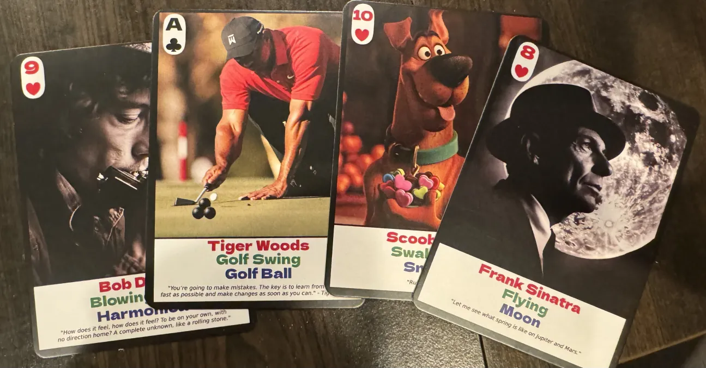
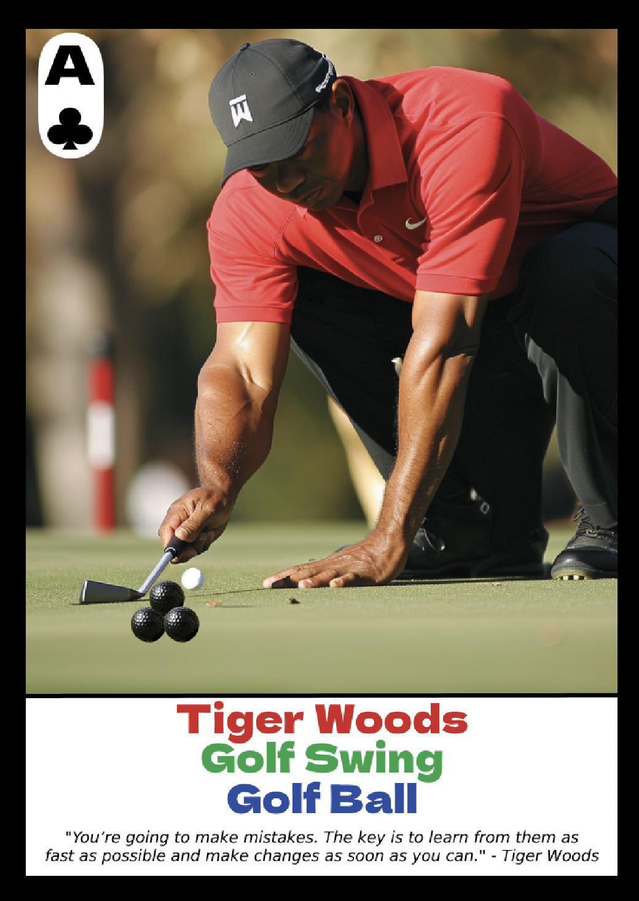
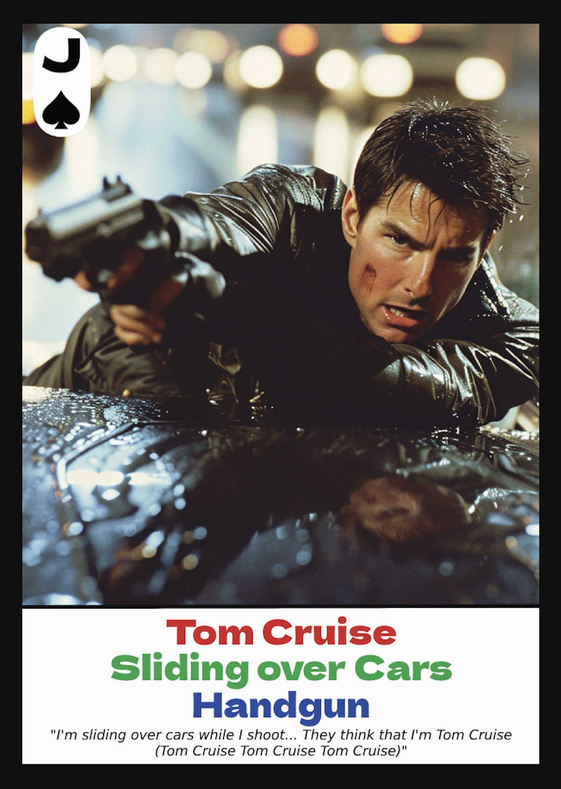
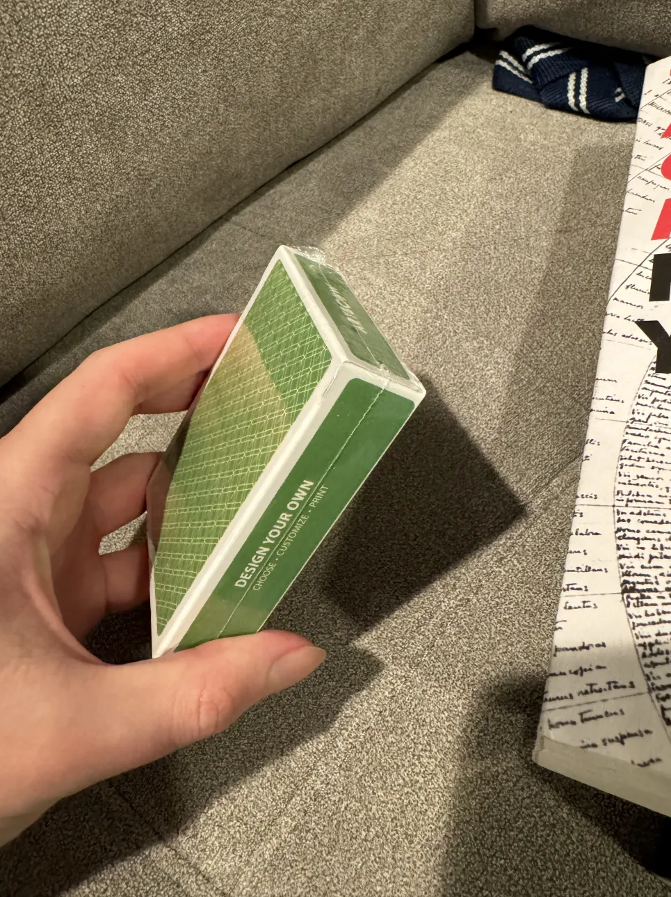
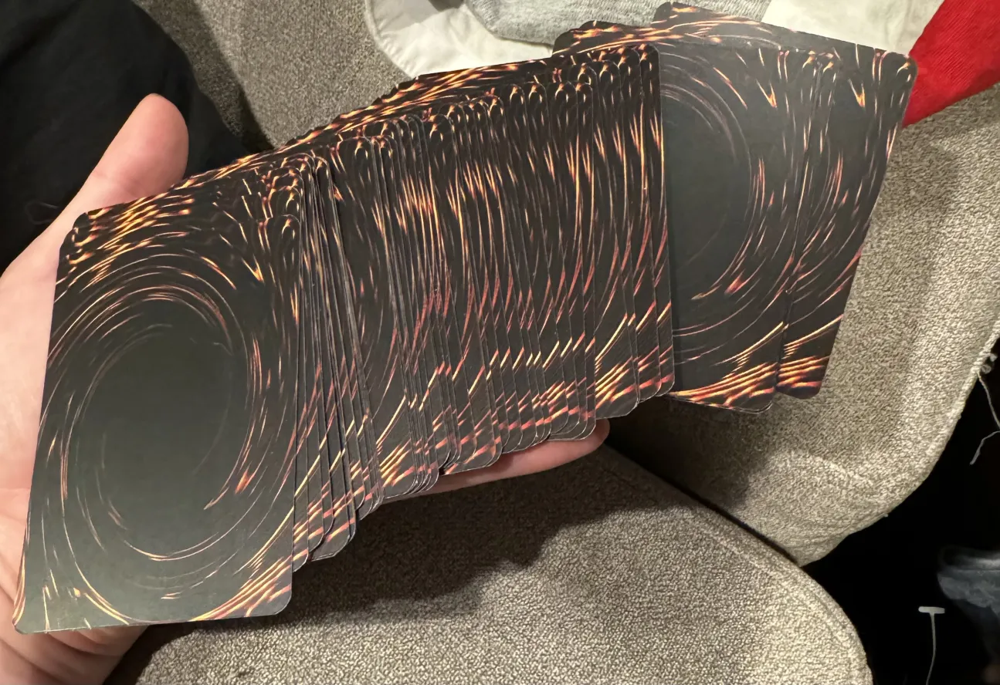

Printed PAO Cards
Table of Contents
Printing Custom Cards for PAO Encoding Practice
This is just a quick rundown on how I generated custom playing cards with my PAO images on them. I used a photoshop template from makeplayingcards.com, I edit the template in Photopea1, and I made an effort to try to use Midjourney v6 to generate high resolution images whenever they were not absolutely terrible. I got them printed via artscow.

Why Do This
My motivation for doing this was pretty straightforward, but can be broken down into a bunch of little different reasons.
Why So Much Focus on Playing Cards
A reasonable question would be: why so much focus spent on the playing cards event, which seems the most clearly useless of the disciplines in memory sports. I could focus instead on names+faces, which I am notably bad at; I could focus on words, since on-the-fly substitute word is the least systemizable part of this whole thing; I could focus on numbers, which would have the most direct value in my actual life. But instead I'm doing all this work on playing cards. Why?
Put simply, because I get to practice memory techniques, and I only need to learn half of my number pegs to start working on it. The way my current system works is that hearts encode 1-13, spades encode 21-33, clubs encode 61-73, and diamonds encode 81-93. This, of course, is 52 rows of my list of 100 PAO triplet pairs. When I get fluent at these (i.e. when I can encode fast, and I feel pretty confident my images are not colliding at all), I can do the same process with the other half of the pegs and start working on numbers.
I thought it would be lame to work on numbers only using half my system, too much straining to learn 100 triplet pairs all at once, a waste of time to work on random numbers using only 0-9 pegs, and so on. This way, I can learn half my images really well and then move to another event where I have to learn the same amount of images about as well. I'm hoping the visualization practice carries over to the other events, once I get there. I still do words practice every now and then, but the focus is primarily still on cards for now.
Why Cards with Images On Them
I previously demonstrated that if I skip the encoding step and just memorize the images directly, I can get pretty close to the International Master qualification time. Creating these cards is a relatively time-intensive process where I have to get a good image, fill out the template I was using, find a good flavor text quote, and so on. This little project was therefore mostly done for two primary reasons. First, to give me a way to practice raw memory placement, rather than encoding, similar to using the software I used in my earlier demonstration. Second, to make me look at my PAO system a lot more, so I would learn them more deeply by virtue of spending all this time making the cards.
In addition, I am a computer vision researcher, and Midjourney v6 just came out. A little project where I poked around with it, having to generate a variety of different types of images and learn what sorts of things it was good or bad at seemed like a good use of my holiday time. I figured a little personal deck of cards where nobody thinks I am trying to profit off of generated images would be the best way to do something like this without anybody getting too angry at me.
Why Print Custom Cards Instead of Writing Software
You might object to me getting these cards printed, instead of just writing a simple program for free which would display these images in a random order. If I didn't want to spend any money, and just wanted the above two things, then that is probably what I would do. But there are some advantages to getting the cards physically printed.
First off, I think it's nice to have a little artifact which represents your interest in something. I'm not sure I'm going to stick with this memory sports stint for very long2, but always being able to look at something in my house which reminds me of doing all of this would be nice as well.
On top of that, I think that having this as a physical deck of cards and not as a spreadsheet in the cloud makes it somewhat easier to physically explain it to someone, out there in the real world. It feels lame to type it out this way, but part of why I'd like physical cards is the pedagogy of having them in this format, rather than making someone need to flip back and forth between a spreadsheet and regular playing cards.
Finally, this seemed like it would be a potentially useful thing to learn down the road, for things like gifts or custom games. There's new card games being designed all the time, people who like card games love card-related gifts, this whole process does not seem terribly expensive, etc. I can envision in the future wanting to do something like this for a general card-game-related project, and it seemed like a fun way to learn the process for getting this sort of thing printed.
Getting Good Images
Midjourney Images
Getting a good image to put on every one of these cards is a surprisingly challenging task. A big part of my attempt to do this was to see what kind of use I could get out of Midjourney v6, since everybody was raving about it. There are certain things Midjourney is good at (photorealism, extremely famous people, super high resolution images), and the things midjourney is really bad at sometimes helped more than they hurt.

My Ace of Clubs card is a good example of how I created some of these cards with multiple memorable things about it. Ac in this case has an easy mnemonic ("Tiger Woods is the Ace of Golf Clubs"), A-9c all being sports makes it easy to generate clubs-like shapes with some super rudimentary photoshops, the athletes I selected are largely extremely famous, and the freaky idiosyncrasies generated by Midjourney make this sort of output actually more memorable.
Overall, my assessment of Midjourney v6 is that it is not great at following prompts, compared to something like DALL-E 3. It's really good at generating things which seem like they are photos which already exist somewhere on the internet, if you want something high resolution with no copyright associated with it3.

Midjourney is not capable of doing it all, though. Like DALL-E 3, it seems completely incapable of generating anything remotely like DDR / ITG, despite DDR being a substantial cultural phenom in the aughts. On a related note here, I was a bit surprised that photography surrounding these games was so lacking. Most images I could find of Chris Chike (6c) were either only his feet on the pads, only his torso with the pads not visible, from behind to show the screen and not his face, or grainy webcam footage for playercams. DDR has become a fun sort of turing test I like to give these models when poking around with them for the first time. There's no shortage of images of these machines, or the prominent players, but composing something nicely requires a degree of few-shot learning which is perhaps more challenging than I initially imagined.
Aside: Generative Models for Disposable Art
Something I think is striking about how the act of memorizing playing cards using PAO is the need to very quickly conjure a mental picture, to remember it clearly for a brief period of time, and then to discard it forever, never to be seen or used again.
I think this is a nice analogy to the long term potential use case for generative image models. I think a lot of discussion around these models goes into picking apart whether the model "can truly create art", or evaluating the relative superiority of human artists, and so on. Using Midjourney for this little project has given me a novel perspective on what I think is likely the most useful application of this sort of technology: disposable images.
It seems sort of obvious now that I'm typing it out – humans make art intended to be seen. Creating visual art is the act of using a visual medium to express something, usually something meaningful and important. I don't really think I believe that this will ever be "replaced" by generative models, even if generative models can produce images which are nearly technically perfect. What makes visual art into art is having it mean something, and access to the ability to create technically perfect drawings puts you about as close to being an artist as buying an expensive camera puts you close to being a professional photographer4.
What makes generative models different is that models make art intended to be used5. You can think of them as being able to take a vague thought and extremely quickly being able to display a rough approximation of that thought on the screen. If I want an image of "Taylor Swift Flying to another Planet" (AH, 8H, 8S), for this particular case it's useful to be able to see it. It doesn't need to be art. It doesn't even need to be good. It just needs to be usable. After I am done using it, I am going to try to forget it ever existed. To do that to a human artist's work would be insulting the effort required to create it!
I think there is a lot of interesting potential for these sorts of technologies to be a sort of interface for imagination, a way to specifically communicate specific ideas very quickly. There's long been work to hook these models up to fMRI activity, and I can envision a future where rather than these models being used to "create art" they can be used as a sort of scratchpad for people to communicate about visual concepts which are clumsy to represent directly via language.
How They Came Out
At first, I tried to use makeplayingcards.com for both the template + for printing. However, it became apparent after I placed the order that they would not be willing to print cards containing copyrighted characters or celebrities (i.e. virtually every single card in my deck) and my order was summarily canceled. I tried to pivot to artscow.com after briefly diving down the rabbit hole of trading card game proxy cards. Turns out a big use case for this is printing out cheap counterfeits for valuable cards so you don't have to purchase them to play the game6.
As it goes with artscow, the print quality was quite bad overall, the cards don't feel nice to touch, and the shipping took an extremely long time (almost 30 days). However, they did print my cards and then send them to me, so I suppose that is a victory for artscow compared to makeplayingcards.com. I think I may put these into playing card sleeves in an attempt to make them a non-tactile nightmare to flip through them, but overall I am happy to have this little project brought to something you could call completed.

Printed Cards as a Practice Tool
I ran a few untimed speed cards attempts using this deck, and the experience is pretty similar feeling to when I simply had a computer program spit out my encodings for me. Forming the image and memorizing the deck is very quick, and feels very clearly like training wheels to using a real deck (which I've been practicing on before this arrived).
I am going to continue using this deck as practice/warmup, and making a clear effort to not look at the images unless I cannot think of the encoding fast enough. Even using the deck only a couple of times has made the associations with my encodings feel quite a bit stronger, since running through and practicing them is as much "flashcards" as "memory practice". Ideally I would like to reach a point where a regular deck of cards is roughly the same speed as this deck, so I'll be using both until then (or until I get bored of this).
Footnotes:
The backs of this cards are just yugioh card backs, because I couldn't think of anything else to put there. Kind of fun still.

I am interested in grinding this to the extent where I can genuinely achieve the IMM benchmarks in an unofficial setting. That is, sub 2:00 cards, 10 decks in 1 hour, and 1000 digits in 1 hour. These all feel weirdly achievable to me, capabilities wise, and I imagine a lot of the challenge is doing these in competition environments. I don't know if I will have enough interest in traveling to memory competitions, nor do I foresee myself having legitimate interest in the grind of a 3-digit system / the harder titles. To me, a layperson, there seems to be a pretty visible wall where practicing beyond that point becomes clearly about being good at memory sports rather than just being able to use these techniques well, and that point is my current predicted point of lost interest.
To this end it really does feel like Midjourney compared to other models is specifically designed as a tool for evading copyright. I wasn't able to see much success with prompts like "<X> as anime" or "<X> doing <Y unusual thing>", and even on relatively simple prompts like "Cats playing mahjong" it would generate cats playing dominoes instead. I think Midjourney feels the shakiest to me on ethical grounds of the available generative models as a result; I came away from the project feeling moderately impressed with the generation quality and also thinking that there was little use for it other than not paying people who produce images which already exist. I do not feel this way about image generation models in general, and it feels noteworthy to notice that difference in how I feel about it! It seems obvious to me that big changes to copyright law are likely looming around these models, and as much as I believe that copyright law being defanged would be a huge boon for society, Midjourney instills in me the most sympathy for people with concerns of "theft".
Which is to say, I think you could create visual art with AI tools, but you'll need to compose objects / control the layout of the scene / modify errors / use photoshop / do all sorts of things which move the act of creation squarely into visual art territory rather than just simple prompt engineering.
I do recognize the potential for harm for artists whose livelihood depends upon useful art which does not represent much about the human condition. I suspect this is a lot of the real issue, rather than any real concern of the aesthetics of AI as an "art movement", and with that portion of the discussion I sympathize. I think AI has the potential to disrupt virtually every industry in the coming years, and this is a concern I don't think is limited to visual artists. I still do hold on to some hope that a post-AI world will cause more social good than harm, and that evolving skillsets of people with displaced technical skills will more or less let most people live relatively unscathed (albeit different) lives, but only time will tell.
One of these I thought was interesting was cases where you want to run a deck with an extremely expensive card, which you actually do own. If you own the card, you should be able to use it, right? But if you let your opponent shuffle your deck and he bends your five-figure-value card, you'll be furious. So what some people do is bring these cards in protective cases, to prove ownership, and then use a counterfeit proxy in their deck which is not so risky to use for regular play.